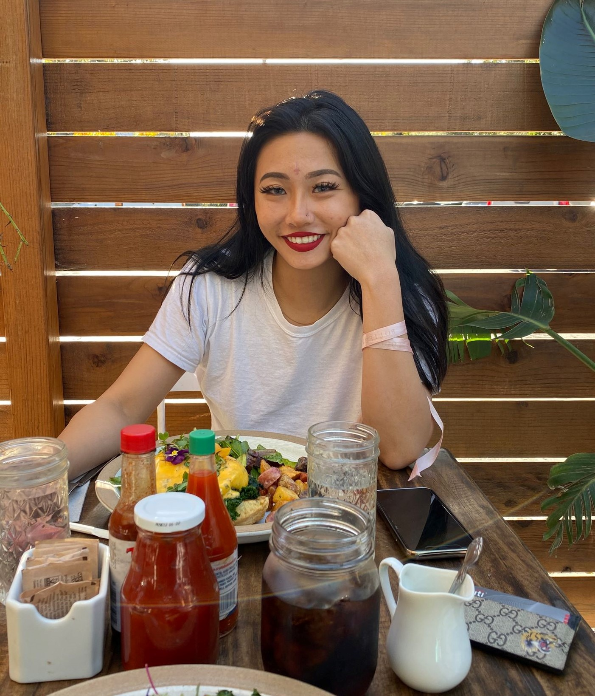
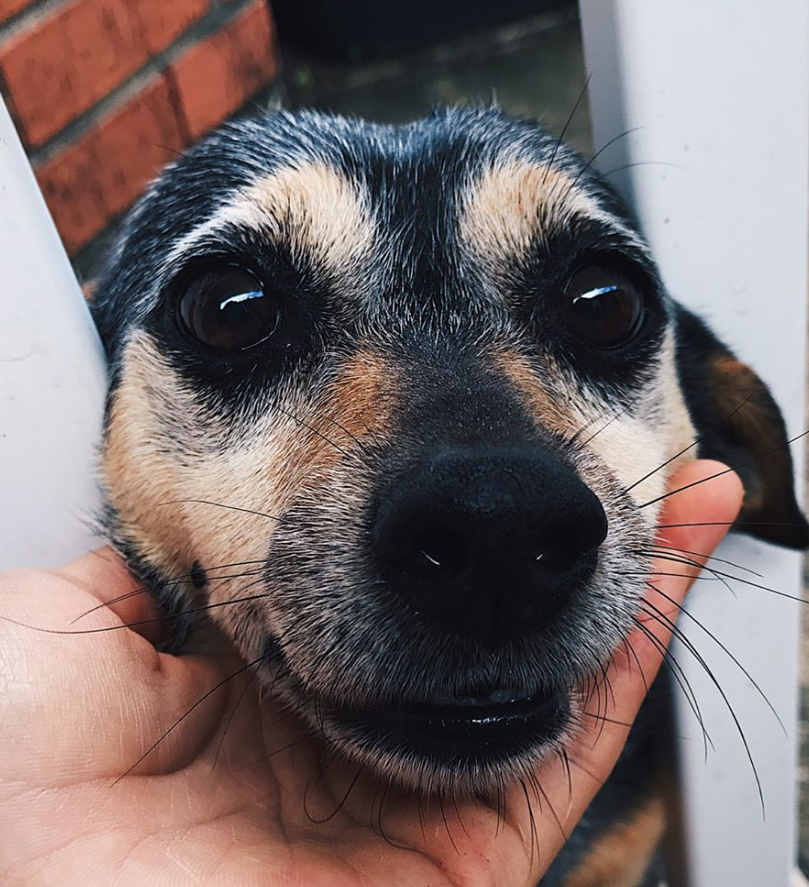

Hello and welcome to my website! My name is Violex and I am a student at UC Berkeley studying data science. I started this website as a fun summer project but I'm hoping that it'll serve as a blog as well as sort of a live resume where I can record my experiences in life regarding my studies and career as well as show off some of my personal projects!
I graduated in 2017 at the top 4% in my high school from Clear Lake High School in Houston, Texas, where I've lived most of my life. After graduating, I moved halfway across the country to attend college at UC Berkeley. I entered college thinking that I would exit with a degree in biochem and go to medical school, but life doesn't always work out the way it's planned. I switched to data science after my first year when I realized that I wasn't interested in any of the courses I was taking. Even though some might see switching as a bad decision because it essentially meant my first year would go to waste because many of the classes I took were not relevant to data science, switching majors is the best decision I've ever made. I'm thankful to finally have found an area of study that I'm genuinely interested in and I'm super excited to see where data science takes me.

In my free time, you'll most likely find me studying with friends late into the night, at the campus gym working out, or in my room painting. I like to describe myself as someone who is genuine to herself and her values and I believe that this carries over into my professional life; I love to learn things and learn them thoroughly, which can be a curse at times because I don't like moving on unless it's perfect. I'm very passionate about data analysis, AI, machine learning, regular learning, and animals! (Bonus pic of my dog, Cocoa!)
You can contact me through my LinkedIn or by sending me an email. If you're interested in viewing my schoolwork, head over to my GitHub. Under the projects tab, you'll find some of my personal projects and if you want to see the courses I've taken, then head over to the courses tab! If you're interested, you can download my resume as well!
Thanks for visiting my site and check back soon for more content!